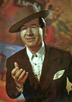
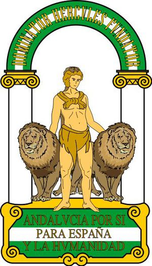
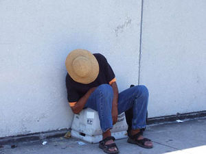
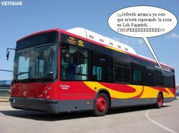
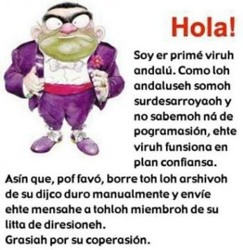
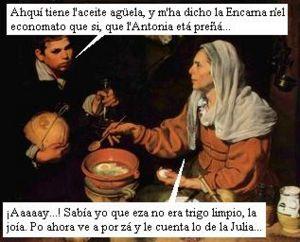

Andaluz
 De: La Frikipedia, la enciclopedia extremadamente seria.
De: La Frikipedia, la enciclopedia extremadamente seria.
| De la serie idiomas del mundo:
|
| Andaluz
|
| 
|
| Hablante típico de Andaluz
|
|
| Familia
|
Indoeuropea-Miarmesa con ciertos matices pishianos.
|
| Número de hablantes
|
Ocho millones y pico.
|
| Hablado en
|
Andalucía Occidental.
|
| Hablado por
|
El Cuñao y Lopera
|
| Artificial o Natural
|
Der campo shiquillo
|
| Nivel de frikismo
|
Nulo.
|
| Dificultad
|
Escasa.
|
| Truqui para dominarlo
|
Tomarse un fino.
|
| Máximo exponente
|
Juanito Valderrama.
|
| Ejemplo de uso
|
¡Juancahlooo, subete p'arriba que ya stán la zarzisha!
|
 "
Illo, como me lleve la contra te azuzo ar tigre".
«Conozco seis idiomas que uso en el día a día, el italiano para hablar con las mujeres, el francés para hablar de economía, el alemán para hablar de guerra, el español para hablar con Dios y el andalú.... p'ablá con loh colegah, ven pacá primo»
~ Luis XIV sobre el andaluz
El andaluz, no es un dialecto en sí, pues no posee propiedades lingüísticas o sociales inherentes que le hagan gozar del prestigio necesario para ser considerada como tal. Más bien, el andaluz es una modalidad de habla, la modalidad Meridional, compartida con las Islas Canarias y gran parte de los hablantes hispanoamericanos...
-Ohú que dize er nota este, está empanao quillo, trae pacá er teclao que ya zigo yo-
El andalúh, el andalúh eh la lengua de la hente kon arte, la hente kon grazia, ole aí. La hente k´avla andalúh eh güena, güena, güena, pero güena de berdá, pa komerzela con papah. El andalú eh l´espanyóh de Andaluzía, (kuando tah inshao de Cruhkampo) el ehpanyóh (no qahteyano, een) kon denominazión d'origen Andaluzía. A nohotroh noh da iguáh la politica i to er mamoneo eze, el andalúh lo pué abláh to'r (l) mundo: shino, europeoh, qatalan, amerikanoh de Nueba Yoh, ¡ hente importanteh cohone! Ademáh pa enzeñarze a abláh l´andalúh, no aze far(l)ta konpraze livro ni marikonáh d'ezah, ezo eh un mohón pinshao en un palo. Ke zi "Ome Inglih", ke zi "Foliuh Mi"... mamoneo to, pa avláh guen andalúh namáh k´aze far(l)ta unoh güenoh kolegah i una o doh canitah (karo ke treh zon mehore, ¿e o no konpare?, un izokarro!). Ea kiyo, poh zi tu te kiereh aprendeh to loh kalisheh e nuehtra lengua, leete ehte parrafo bariah bezeh i la casho guía éhta, k´enzeguía bah ehtáh piyendote unoh vokeroneh en binagre aí anka Güan pareziendo andaluh o uno de nohotroh. Otra koza ke te vi a dezíh, (ehto eh ohzionáh) hínkate un finito güeno d'akí d´ nuestra Tierra i ponte un flamenkito anteh d'empezá a prahtikáh...
Cómo hablá n'andalú
 Un andaluz practicando el zezeo mientras trabaja (Zzzzzz...), algo típico en la zona.
He aquí un pequeño diccionario Andaluz:
- Quillo: Vocativo por excelencia, originado por la contracción fonética del diminutivo chiquillo. Así encontramos: Chiquillo, quillo, illo . Cuenta con variantes locales: En Cádiz existe su equivalente "pisha", con el mismo uso (por ejemplo: "¿Qué paza pisha?") o el "miarma" sevillano o el "Killo" Barbateño
- ¡Jhefe!: Camarero, equivalente al garçon francés, pero sin mariconadas. Por ejemplo: "¡Jhefe!, ¿qué hay de tapita?" o "¡Otra jarra ahquí jhefe!".
- Er caló: Calor hasta los 40°C.
- La caló: Calor pasados los 40°C.
- Maricona: Gay.
- Maricona: Metrosexual.
- Maricona: Lesbiana.
- Babushah: Zapatillas.
- Cazera negra: Coca-Cola.
- Guantá o huantá: Hostia o golpe, con sus variantes "leñazo", "bofetá" y " partí la boca / loh hocico".
- Leuro: Euro. Los viejos andaluces son expertos en buscarles sinónimos a dicha moneda, así encontramos: ebro, lero, leru, etc.
- Arrmóndiga: Albóndiga
- Pograma: Generalmente, programa de TV
- Casharro : Cualquier aparato que funcione con electricidad o sin ella.
- Furbo: Fútbol.
- Naide (n): Nadie.
- Pero: Manzana (más comúnmente de color amarillo)
- A'hcape: Deprisa, literalmente "a escape".
- Arrempujá: Empujar.
- Arrejuntá: Reconciliarse.
- Ancá: A casa de. Ejemplo: "Hoy viaí ancar Juan" o "Estoy ancá mi tía".
- Arcancía: Se pronuncia arcanzía pero se escribe hucha.
- Bisho: Bicho. Usado para designar a todo tipo de animales que vivan en tierra, desde insectos a mamíferos o aves.
- Bisha: Serpiente o en su defecto cualquier bicho que repte.
- Arrecío: Muerto de frío.
- Morihqueta: Gesto raro o con ánimo de burla.
- Soleá: Tomar el Sol
- Antié: Anteayer.
- Amberca: Piscina.
- Bushe o bushito: Sorbo de un liquido
- Búcaro: Botijo. Muy usado para crear apodos mediante yuxtaposición.
- Cebaura ( o Zabaura) : Rozadura
- Ehnortao: Atontado, distraido.
- Flama: Calor (los canis suelen convertirlo en adjetivo)
- Ashushurrío: Flácido, decaido, etc.
- Abaja: Baja (imperativo).
- Buhero o buquete: Agujero o boquete, con su degeneracion buhero.
- Un poné...: Un suponer...
- Aentro: Adentro
- Andihpué: Luego o "y despues".
- Pelá la pava: Enrrollarse en un lugar apartado y oscuro.
- Arruea: Rueda (usado bastante por los gorrillas/canis)
- Calentitoh: Churros.
- Carzo: Zancadilla
- Ehtijherah: Tijeras.
- En + nombre de cualquier droga: Encocao (en Málaga se dice cocozo), engrifao, enpastillao, etc. Puesto de dicha droga.
- Tajá o tahá: Trozo, porción, cacho, etc. o gran borrachera
- LLelo: Hielo.
- Ramplá : Arramplar, aprovecharse al máximo de algo
- Sofale: Plural de sofá.
- Shalere: Plural de chalet.
- Praticante: ATS.
- Análiceh: Analisis.
- Jincá: Fornicar (vulg.); Follar (frungir)
- Abujhetah: Agujetas.
- Andaliah: Sandalias.
- Ehcamondá: Limpiar.
- Comiíto'n'mierda: Muy sucio
- Peshá: Gran cantidad de algo.
- Rebujhito: "Bebida alcohólica de gran exito entre las ferias de toda la comunidad."
- Economato: Tienda de comida.
- Oreá : 1.- Poner a secar algo; 2.- Ventilar
- Jumío o humío (fem.: Jumía): Hijo mio = jo mío = jomío = jumío. Contracción fonética gitanil.
- Periquitoh (o Periquine): Cualquier serie de animación o dibujitos, películas de Disney, anime, etc.
- Mushashito: El héroe de la película
- Ashancao: Dejar a alguien sin saber que decir o hacer.
- Coquiná: Pagar algo
- Mijhita: Cantidad pequeña de algo.
- Revoleá: Agitar algo antes de lanzarlo.
- Cabrillah: Caracoles comestibles de mayor tamaño que los normales.
- Casharritoh: Atracciones de feria.
- Fullería: Hacer uso de trampas.
- Pejiguera: Adj.: Tiquismiquis.
- Arfilere (en algunos lugares también llamados Perrillos o Palillos): Pinzas de tender la ropa.
- ¡Fité!: ¡Fíjate!
- ¿¡Tekkíya!? : ¿¡Te quieres ir ya!? --> Tr.: ¿¿ Estás loco?? ¬¬
- Zaborío, malahe, ciezo, borde: Saborido, antipático, desagradable.
- Ciego,peo,cogorza,tajá: Borrachera
- Camballá : Movimiento típico del que está borracho (en zig zag); también denominado como " Medir la calle"
- Hincá loh cuerno, carpeá: Caerse
- Dá por culo: Molestar
- Tocá loh cojhone (huevoh) : Molestar (hasta el punto de hacer enfadar a alguien)
- Tocarze loh cojhone (huevoh): No hacer nada
- Zumbá,caneá (a alguien) : Pegar a alguien
- Estar zumbao : Estar loco
- Cahcá: 1.- Enfadar; 2.- Suspender un exámen
- Cahcajho : Piedra muy grande
- Coño,jigo,rajha,zurro,shishi,mendo,pepe,pipa (vulgar): Partes sexuales femeninas
- Chocho (shosho): 1.- Partes sexuales femeninas; 2.- Altramuz
- Carajho,polla,pisha,vergajho (vulgar) : Partes sexuales masculinas
- Buga o vugui: Coche
- Ehpurreá: Derramar algo (suele ser utilizado por la parte de Almería)
- Cortarze loh cojhone: Apostarse algo
- Cortarle loh cojhone a alguien: Empleado generalmente como signo de amenaza
- Encojhío,rata: Tacaño
- Cortao (ser o estar) : Ser tímido o estar avergonzado o café
- Márralo: Amárralo
- Lò zojos: Los ojos
- Arra'kharse: rascarse
- Der: Del, suele usarse para referirse a alguien
- Revorcón: Acto sexual
- A la vera de: Al lado de
- Illo: Tío
- Illo illo: Fórmula para llamar la atención
- Illo illo illo: Hay dos personas peleándose
- ILLO ILLO ILLO ILLO: ¡Corre por tu vida!
- Fisno: 1. Hablante de español castellano 2. Fino
- Chatiyo: Copa de vino
- Sentir: Sinónimo del verbo oír
- Púo: Harto de comer
- Buharra: Homosexual (despectivo)
- Ehplayao: 1. Cómodo 2. Desahogado
Reglah gramaticale der andalú
- Para indicar a posesión, en el andaluz se pone el determinante posesivo detrás del nombre.
Ej.: Er teléfono mío é 987 654 321
Test pa sabé si hablas andalú según un andaluz
Ira, pa sabé si de verdá sabes hablá n'andalú, namá que tieneh que hasé er test ehte, esto eh un test de lo mejhorcito que hay... ¡gloria bendita ome! Enga que namá que tiene que leé ehsto:
- Sirvame ensalada supreme con su salsa siempre bien disuelta y pan de sesamo sin sal.
- ¡Ay omá cuantah ezeh! Zi tú ta zentío comodo leyendo ehsto, es que ere de Madrí p'arriba, tú no habla andalú ni abajo agua ome. Ahora, que zi ta costao la misma vía leé esto, zi tú ahora mismo está ehmorecío, eh que tú habla andalú, ole ahí er mostro, n'pacá que te vianvitá aun tinto ancá Pepe. Güeno chulo, ahora llega la zegunda prueba:
- Me comí una pizza en mi jacuzzi, mientras contemplaba un cuadro de Picazzo.
- Zi tú has leío esto de lujo, tú eres andalú autentico, tú lleva hablando andalú dehde chiquetito ¡ole jai!.
- Mira la foto d'ahí arlao quillo.
- Zi puedes ve er número que hay en er zírculo d'ahi arlao, no paza na. Ahora, que zi te cuesta trabajo lee er número que hay metío en er zirculo... tampoco paza na, pero eres dartónico.
Tú dirá: "que dice er chavea ehste, ¿qué cohone tiene que ve ehsto con'er andalú quillo?", po tú lah dicho compare, na, lo que paza que lo andaluze nos preocupamoh por la zalú de tor mundo, porque nohotro zemoh gente mu preocupa poh lah perzonah, ghente hospitalaria miarma.
Tipos de andaluz
 El "
andaluz cani de autobús" en todo su esplendor.
Nota: En el autobus no hay chófer, pero el cani tardará unas horas en descubrirlo, para entonces se habrá aburrido o se quedará dormido en el asiento.
En cuanto a fonética podriamos distinguir tres tipos de andaluz:
- El andaluz fino: Este se da en la capital de Andalucía o Granada, donde son muy fisnos y comen bacalado. Se caracteriza por unificar los sonidos z, c y por supuesto la s en la s, emitiendo los sevillanos al hablar un sonido parecido al que hacen las bichas en el campo (ssss). Por ejemplo: "Ssi, ssuele passar por aquí", en ese momento tú giras la cabeza a ambos lados buscando reptiles entre los arbustos. Este fenómeno fonético ha sido bastante explotado por los canis: Sosio, ¿qué ase cabesa?, etc., y por el Ayuntamiento: TUSSAM, EMASESA, LIPASAM, etc.
- El andaluz normal: El más extendido por la comunidad, un poquito de ceceo y de gracia cohones. Existiendo el estandar (ceceo) y el basto (zezeo), que supone la transicion hacia el andaluz superbasto. A mayor nivel de ceceo, la velocidad del habla es mayor y cuesta más trabajo entender al sujeto que habla. Por ejemplo: "¡Que ci cohones! zalió corriendo p'allá" (velocidad x2, nivel bobinado de cinta). Se da en pequeños pueblos o ciudades como Morón de la Frontera, Marchena, etc.
 Un prototipo moderno y efectivo de virus andalúh
- El andaluz superbasto: Esta gente ya no habla, comete atentados fonéticos, son el Al-Qaeda de la pronunciación. Solo se da en sitios muy concretos y generalmente pseudoaislados por olivares coloridos. Da lugar a muchas confusiones para el oyente, por ejemplo: "No, aqui no je venden pijoh", ¿hablan de la venta ilegal de personas adineradas? ¿O de la venta de inmuebles?
- El andaluz ladrado: Este se da solo en chalets y cortijos autosuficientes y perdidos de la mano de Dios, cuyos dueño creen que la televisión es una puerta al infierno. No es correcto llamarlo andaluz, pues perfectamente podrían estar hablando "inglés ladrado", "francés ladrado" o incluso "rumano aullado". Por ejemplo: "Jau jinpacá tiaeté otiajierro" (no es un idioma de la Sudamérica precolombina, aunque lo parezca), significa: "¡Ay, ven para acá que te voy a meter una ostia a jierro".
- El andaluz cani: Este pseudolenguaje semianimal se sustenta sobre cuatro pilares básicos: Sosio/surmano y derivados, conceptos absurdos codificados mediante sonidos guturales inteligibles solo para los canis, conceptos que hacen referencias a objetos de valor y, por último, lenguaje hostil a gritos (gritar amenazas). Por ejemplo: "Sosio, jaujaujau reloh de oro jaujaujau Y SI NO ME LO DA TE RAJHO". A esto se le viene llamando "Fenómeno rottweiler inculto con oros". También conoce otros dialectos como el "andaluz cani de autobús". Por ejemplo: "CHOFEEEH, AMONO YA QUE HE QUEAO CON LA PARIENTAAA - ojú sosio voiaí pallá y le voy a rebentá la cara - JEFEEE ¿A QUIEN ESTÁH ESPERANDO SOSIO, CON LA EMPANAERA? VAYA ER NOTAAA... COMO VAYA P'ALLÁ TE VAH ENTERA" (siempre desde la parte trasera del vehículo). O también el dialecto de las jessis (20% español degenerado + 80 %tacos y guarradas).
- El andaluz pijo converso: Suele darse en hablantes ceceantes que han emigrado al Norte de la Península o a Sevilla capital. Estos veletas intentan mimetizarse para camuflarse entre los demás pijos y para ello adoptan un seseo adulterado, traidor y mal realizado. Esto es debido a que los pijos no cecean, pues dicho fenómeno fonético es supervulgar, así que el infiltrado debe adaptarse a las normas que estas elites inponen a los suyos. Para empezar a sesear, tu familia debe tener una renta per capita elevada y chalet con piscina. No obstante, el seseo converso nunca es puro, y la sombra de la traicion siempre perseguirá a los cobardes que reniegan de sus origenes. Un ejemplo de su uso: "Ciempre vamoss a tomarnoss unass servezas a un bar de la calle Cierpes, ¿Zaes?".
 El andaluz
maruja en estado natural.
- El andaluz maruja o de pescadería (Universal, degeneración fonética +60, +10 por degeneración moral y mala praxis): Este andaluz se practica en todo pequeño comercio de Andalucía, hábitat natural de toda maruja de pro, preferentemente charcuterías, pescaderías y carnicerías. En dichos centros no se venden alimentos, sino que son una tapadera para el tráfico de información, son como los camellos o nucleos de distribución oficial de datos triviales para marujas. Así, el andaluz maruja bebe directamente de fuentes tan reputadas y versadas en el tema como D. Jesus Mariñas, Catedrático en "Te Puedo Grabar en el Bar Comiendote un Filete porque Hay Libertad de Expresión" con Master en Ciclos de Administración de Chismorreos Avanzados (CACA), Aurelio Manzano, María Patiño o profesionales de semejante índole. Se caracteriza por ser hablado a una velocidad cuatro veces superior a la velocidad del habla normal, pues se debe condensar la vida de todo un vecindario en apenas cinco minutos. También por la voz baja y el tono marcado. Por otro lado, se articula intercalando la información obtenida el día anterior en el vecindario entre locuciones desiderativas alimenticias, es decir, marujear mientras compras la comida. Por ejemplo: "Mía niña, me vah poné un cuarto quilo chopepork, un bisté de pollo y ece güezo par pushero... ¡aaah...! ¿ta'nterao de que a la hija la Guana l'han dejao preñá? Ci ci, échame también er perejí ece... po mira niña, ahora toavía no zabe ni quién e'r padre... ¡norma...! ¡Aaay... ci yo la venía vení...! mira que ce lo dije a la Guana: "que tu hiiija h'una pendoooona...""
- El andaluz oriental: Éste andaluz es muy diferente al andaluz occidental (Er de Sevilla quillo) se suele darse en Almería y Granada. La principal diferencia es que la S no se pronuncia apenas, por ejemplo: Espiente (Serpiente), y la Z si se pronuncia correctamente. Tampoco se dice ni quillo ni nada. Una de las palabras más típicas de este andaluz es la palabrajoa, sinónimo de joder. Hablar con un anciano de un pueblo de 30 habitantes es una tarea casi imposible. Por ejemplo, rases típicas de los viejos del pueblo: ,Amó a atá la yegua y también es muy común la frase ¿le ha hechao simienté los puercóh? y su velocidad al habla lo hace imposible de comprender. Cuando una persona con este habla va a otro pueblo suele ser martirizado, porque no hay ni dios que lo entienda, y suelen reirse de él. Los canis suelen hablar con la palabra nene y depende el nivel de basto que sea el sujeto puede evolucionar a nenei o dedei (caso extremo). Este "lenguaje" es perfecto para cotillear sobre las vecinas en el centro de España ya que no habrá ni dios que te entienda, ejemplos: Pepaaaaaah sabíaaah que la dé terceroh beh se a coumpraou un mercedes, sus te puedeh creer, Pepaaaaah sabíaah que el otro día vi a tu marió tonteando con la del Noveno Beh, anque la pobreh... sea ciegáh joa. Los que más "saber" lingüístico tienen de este "idioma" son los: Agricultores, mecánicos, carniceros, barrenderos, cabreros, locos y personas no identificadas. Uno de los grandes defectos linguisticos son la conjugación de los verbos, parece ser que la gente que habla este "idioma" no ha conjugado un maldito verbo regular en toda su maldita y desgraciada vida, suelen decir: Ayé ganemóh vivah! en vez de ayer ganamos.
- El andaluz de Jaén: Éste andaluz solo se habla en Jaén(provincia)y se carcateriza porque sus habñlantes no pronuncian ni una vocal y si la pronuncian es a medias
"Yo soy de Jaén chiqillo de convertiria" en "yo ʃoy è H@é ŋ
Tipos de andaluz según terreno
Los andaluces aparte de las características que los unifican, tiene grandes diferencias entre ellos, partiendo de la gran batalla entre los malafollás granainos y los miarmas sevillanos, que divide la provincia en dos frentes desde que los miarmas aprovecharon un despiste para hacerse con la capital, cuando esta debería haber sido antequera (centro geográfico de lo que hoy en día es Andalucía).
- Miarma: Sevillano. Cumplen todos los estereotipos de andaluz y tienen un acentillo afeminado que los hace inconfundibles, utilizan a todas horas las expresiones "quillo" y "miarma". Tienen la sana manía de endeudarse hasta las cejas solo para poder ir a la feria de abril
- Malafollá: Granadino. Con su peliculiar carácter "simpático" que puede agriar la leche solo con acercarse. Capaces de crear una oración completa usando solo la palabra polla, estrella del vocabulario granadino.
- Cachondos: Cordobés del norte. Son los cordobeses que viven de Córdoba capital pa'rriba (Valle de Los Pedroches y etc). Tienen un hablar "fisno" como haciendose los modernos y sofisticados. Su palabra favorita es "cachondo" alargando la "o" y quedando por encima del destinatario, es un sinónimo de "quillo".
Faltan:
- "Boquerones"(Málaga)
- "Los de la tierra del ronquio"(Jaén)
- "Gaditas o Pishas" (Cádiz)
- "Kiyos" (Barbate)
- "Almerienses"
- "Cordobeses"
- "Choqueros" (Huelva)
Véase también
Enlaces externos
Autor(es):
- Fordus
- Epikurolibre
- Khazike Khashondo
- Azulejos
- El Sevillano
- SeSteve
- Zalteck
- Traxxpad
- Prototype
- Veni Vidi Vici
Frikipedia 2005-2016, Licencia
GFDL 1.2 - Extraído por FrikiLeaks